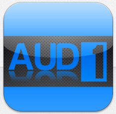

The Biologically Inspired Hearing Aid
The core of the BioAid project is a novel hearing aid algorithm based on our knowledge of the biological processes that occur in the ear.
NEWS FLASH: August 21st, 2013 – NEW APP RELEASED
Now available on the App Store, Aud1 is a new assistive listening app that implements the features requested by the BioAid user community. These features include, but are not limited to . .
- Dual algorithm technology, allowing settings for each ear to be adjusted independently.
- Advanced connectivity options, allowing use of high quality audio peripherals to improve sound quality.
- Stereo linkage technology to preserve spatial cues when the app is used with stereo input hardware.
- Fine grain control over the dynamic range of the processed sound.
- High optimization for extremely low processing delay.
- Automatic storage of preferred settings, even if the device runs out of power.
- Adjustable input and output gain controls to fully utilize the dynamic range of the device.
- Detection of accidental removal of headphones, preventing annoying feedback in public places.
|  | Aud1 pushes the boundaries of assistive listening technology on mobile platforms and it is available for download now. |
 |
A free implementation of the BioAid algorithm can be downloaded on the app store. The app turns your iOS device into a hearing aid by processing sound from the microphone, then delivering the processed sound over headphones in real time. Care has been taken to make the user interface to the BioAid app very simple. However, please read the information on this site to get the best possible user experience. |
The algorithm source code is freely available. This allows others to contribute by creating and evaluating their own implementations of the hearing aid.
Thank you for your interest in the BioAid project.
 |
 |
 |